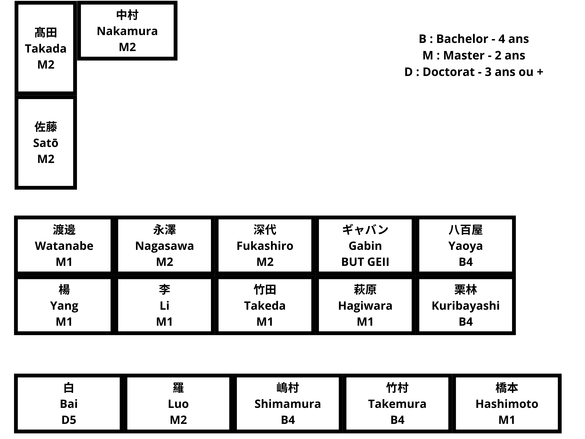

Environnement et Contexte de Recherche
J'ai intégré le laboratoire du Pr. Togo à l'UEC de Chōfu, spécialisé dans l'étude de la biomécanique et du contrôle moteur humain. Mon travail sur le projet ORCA a répondu à un double enjeu décrit par mon maître de stage :
• L'objectif ingénierie : Développer un système de téléopération fiable pour remplacer le travail manuel humain à distance (usines, environnements extrêmes ou dangereux). Ce dispositif permet également de collecter des bases de données de mouvements pour entraîner des IA d'actionnement.
• L'objectif scientifique : Comprendre les mécanismes de la dextérité humaine. En comparant les mouvements d'une main robotique anthropomorphe (qui réplique la structure osseuse et articulaire humaine) avec ceux de la main réelle, le laboratoire cherche à identifier les écarts pour percer le secret de notre agilité.


À gauche : La salle de travail de l'équipe. À droite : Le plan du laboratoire.
Vulgarisation Technique (Démarche Ingénieur)

1. Acquisition Visuelle et Suivi IA
Contrainte : Capter les mouvements de l'opérateur de manière fluide sans l'équiper de capteurs physiques contraignants. Sur le plan technique, la difficulté majeure a été de réussir à faire reconnaître et exploiter correctement la caméra 3D sur le Raspberry Pi 5 face à des problèmes de compatibilité.
Solution : J'ai dû appréhender et utiliser la bibliothèque spécifique DepthAI pour configurer la caméra spatiale OAK-D Lite. Elle gère le traitement d'image en interne et envoie un flux optimisé au framework MediaPipe, qui extrait instantanément un squelette virtuel en 3D composé de 21 repères spatiaux.
Résultat : Un suivi visuel fluide à haute fréquence qui fonctionne de manière autonome sur la carte, sans avoir besoin d'un ordinateur externe puissant.
 Flexion Proximale
Flexion Proximale
 Flexion Distale
Flexion Distale
 Écartement Latéral
Écartement Latéral
 Opposition du Pouce
Opposition du Pouce
2. Modélisation Cinématique Vectorielle
Contrainte : Il fallait transformer les simples coordonnées de pixels fournies par la caméra en angles géométriques précis, applicables à des articulations mécaniques.
Solution : J'ai développé une analyse géométrique par calcul vectoriel. À partir des repères spatiaux de l'IA, le script génère des vecteurs pour chaque phalange. L'angle exact de chaque articulation est ensuite calculé mathématiquement (via le produit scalaire).
Résultat : Un modèle mathématique capable de quantifier en temps réel les flexions, les écartements latéraux et l'opposition du pouce humain.
 Limites Articulaires (Degrés)
Limites Articulaires (Degrés)
 Signaux de Commande (PWM)
Signaux de Commande (PWM)
3. Traitement du Signal et Normalisation
Contrainte : Les servomoteurs ne comprennent pas les "degrés géométriques", ils ont besoin d'un signal électrique précis. De plus, les micro-tremblements de l'IA faisaient vibrer les moteurs en permanence, risquant de les casser.
Solution : J'ai d'abord implémenté un filtre informatique (zone morte de 3°) qui bloque les tremblements parasites. Ensuite, j'ai mené des tests empiriques sur chaque doigt pour déterminer ses limites mécaniques, ce qui m'a permis de convertir proportionnellement les angles théoriques en signaux de commande réels (PWM).
Résultat : Une traduction fiable des mouvements et une stabilisation totale des actionneurs qui protège la structure du robot.

4. Actionnement Mécanique et Énergie
Contrainte : Piloter 16 moteurs en simultané demandait trop d'énergie. L'appel de courant massif au démarrage coupait instantanément la sécurité de la batterie.
Solution : Comme illustré sur le schéma technique, les doigts sont actionnés par un système de câbles antagonistes liés aux moteurs (un câble se tend pendant que l'autre se relâche). Pour éviter les coupures de batterie, j'ai programmé dans le microcontrôleur un délai invisible de 2 millisecondes entre l'activation de chaque moteur.
Résultat : Les pics de consommation électrique sont lissés, ce qui permet au système de fonctionner de manière autonome sur batterie de manière sécurisée.
Validation Expérimentale
Les tests de différentes postures (main ouverte, poing fermé, signe de victoire, pince avec le pouce) ont validé la réactivité du système de téléopération. Le temps de latence entre le mouvement humain et la réplication mécanique est imperceptible, ce qui valide l'efficacité du code exécuté sur le système embarqué.
Bilan de l'Expérience
Ce stage a consolidé mes compétences techniques (Python, C++, traitement du signal) mais a surtout été une épreuve d'autonomie. Face à des problèmes imprévus de compatibilité de versions logicielles sur la caméra 3D, j'ai dû faire preuve de patience et de persévérance pour trouver des solutions par moi-même.
Vivre et travailler seul durant deux mois et demi à l'étranger m'a demandé une grande rigueur d'organisation, tant dans la gestion de mon emploi du temps au laboratoire que dans ma réactivité professionnelle avec les chercheurs. J'ai également pu m'adapter à un environnement académique de recherche, tout en communiquant au quotidien en anglais.
Remerciements
Je remercie chaleureusement le Pr. Togo pour m'avoir accueilli au sein de son laboratoire de recherche et m'avoir accordé sa confiance, ainsi que l'ensemble des étudiants chercheurs pour leur accueil. Je tiens également à exprimer ma gratitude envers les responsables de formation du BUT GEII de l'IUT de Bordeaux qui ont soutenu et encadré la réalisation de ce stage.